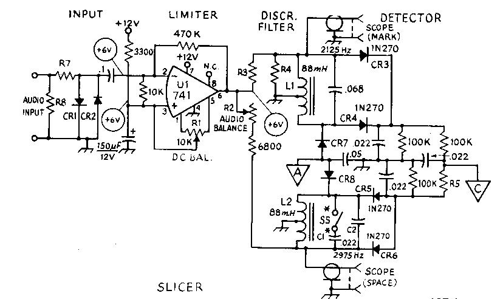
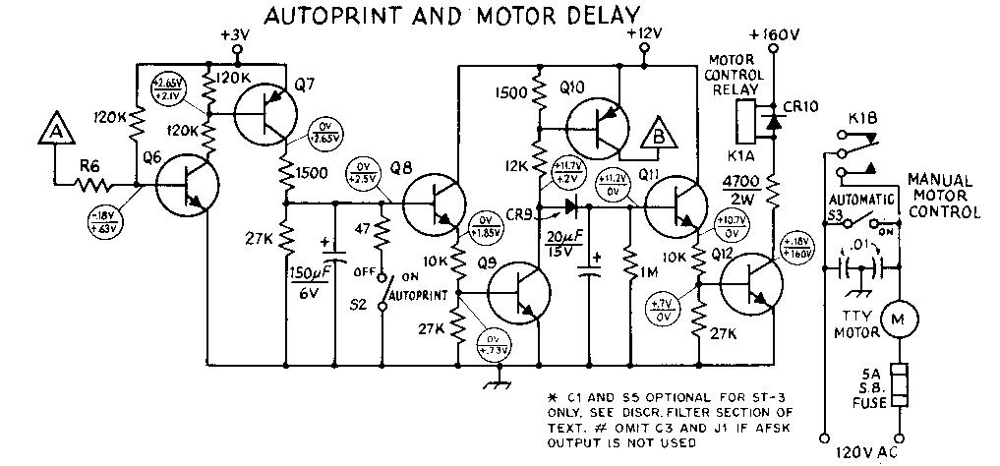
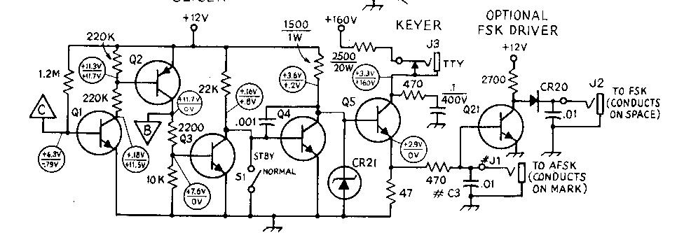
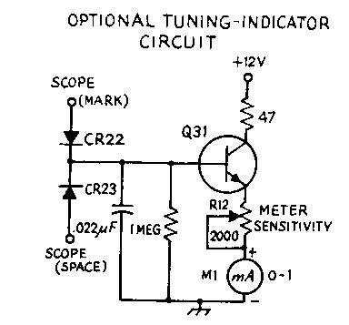
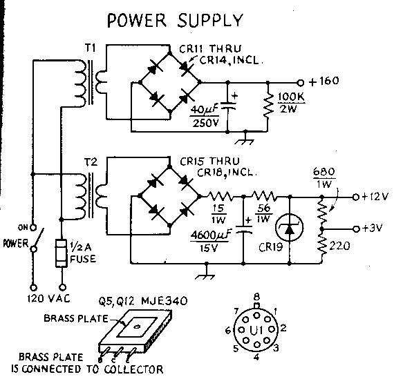

Irv Hoff, W6FFC 1970
DESCRIPTION
The ST-3 demodulator was developed by Irv Hoff in 1970 can can be
built for approximately $50. Using surplus 88 mH toroidal
inductors, the discriminator filters operate with audio tones of
2125 and 2975 Hz for copying 850 Hz shift. The addition of C1 and
S5 will permit one to switch-select 170 Hz shift operation using
tones of 2125 and 2295 Hz.
The demodulator is intended to be operated from a 500 ohm source. If only a 4 or 8 ohm speaker output is available at the receiver, a small line-to-voice coil transformer should be used between the receiver and the demodulator to provide the proper impedance match. An integrated circuit operational amplifier, having very high gain capability is used for the limiter. The discriminator filters and detectors convert the shifting audio tones into DC pulses which are amplified in the slicer section. The keyer transistor, A5 controls the printer's selector magnets, which should be wired for 60 mA operation. the teleprinter keyboard is to be connected in series with the printer magnets, both being connected to the demodulator via J3. Typing at the keyboard will then produce local copy on the printer, and will also produce voltages at J1 and J2 for frequency shift keying a transmitter or audio oscillator.
The autoprint and motor delay section provides optional features, which are not necessary for basic operation. This section provides a simulated mark signal at the keyer when no RTTY signal is being received, preventing CW signals and random noise from printing "garble" at the printer. The motor control circuit energizes the teleprinter motor in the presence of an RTTY signal, but turns off the motor should there be no RTTY signal present for approximately 30 seconds.
The RTTY demodulator may be constructed on a large circuit board which is mounted inside a standard aluminum chassis, as shown here. A decorative self-adhesive paper provides the grained-wood appearance. The meter is Optional and provides a tuning indication for use in the hf amateur bands.
ADJUSTMENTS
With a VTVM, measure the +12 volt supply potential. Ground the
audio input to the demodulator, and connect the VTVM to pin 3 of
the IC. Adjust R1 through it's total range, and note that the
voltage changes from approximately 1.6 V a either extreme to
about +6 V at the center setting of R1. Perform a coarse
adjustment of R1 by setting it for a peak meter reading,
approximately +6 V. Now move the VTVM lead to pin 6 of the IC.
Slowly adjust R1 in either direction, and note that adjustment of
just a small fraction of a turn causes the voltage to swing from
approximately +1 to +11 V. Carefully perform a fine adjustment of
Ri by setting it for a voltmeter reading of half the supply
voltage, approximately +6 V. Next, again measure the voltage at
pin 3. If the potential is approximately +6 V, Ri is properly
set. If the potential is in the range of +2 V or less, Ri is
misadjusted, and the procedure this far should be repeated.
Next connect the VTVM to point A, and open S5. With a mark-tone input, adjust the tone frequency for a maximum reading, around -2.5 volts. Then change the tone for maximum reading on the space frequency. Adjust R2 until the voltages are equal.
With AFSK at VHF, audio tones modulating the carrier are fed from the receiver to the RTTY demodulator. At HF, the BFO must be energized and the signal tuned as if it were a lower-sideband signal for the proper pitches. If the tuning. indicator meter is used, the HF signal should be tuned for an unflickering indication. A VTVM connected at point A will give the same type of indication. An oscilloscope may be connected to the points indicated in the filter section and used for a tuning indicator, as shown in the accompanying photographs.
Oscilloscope presentations of the type obtained when the scope mark and scope space connections in the filter section are made. For these displays the mark frequency is displayed on the horizontal axis and the space frequency on the vertical axis. The signals appear as ellipses because some of the mark signal appears in the space channel and vice versa. Although only one frequency is present at a given instant, the persistence of the scope screen permits simultaneous observation of both frequencies. The photo at the left shows a received signal during normal reception, while the photo at the right shows a signal during unusual conditions of selective fading, where the mark frequency is momentarily absent.
The ST-3 RTTY demodulator (by Hoff — from QST, April 1970). Usless otherwise indicated. resistors are 1/4-watt10 percent tolerance. Capacitors with polarity indicated are electrolytic. DC operating voltages are indicated in the limitor, slicer, keyer, and autoprint and motor delay circuits. All voltages are measared with respect to chassis ground with a VTVM. In the slicer and keyer stages voltage values above the line should appear with a mark tone present at the demodulator input, while values below she line appear with a space tone presets. In the autoprint and motor delay circuit, voltage values above the line occar with a mark or space tone present while those values below the line are present with only receiver noise applied at she demodulator input.

Main Circuit (input, limiter, discriminator and detecter)

Autoprint and Motor Delay

FSK Driver and Keyer
Autoprint and Motor Delay

Optional Tuning Indicator

Power Supply